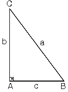
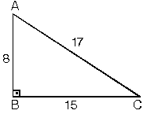

30° nin karşısındaki kenarın Ö3 katıdır.

| Bir açısının ölçüsü 90° olan üçgene dik üçgen denir. Dik üçgende 90° nin karşısındaki kenara hipotenüs, diğer kenarlara dik kenar adı verilir. Hipotenüs üçgenin daima en uzun kenarıdır.şekilde, m(A) = 90°
[BC] kenarı hipotenüs [AB] ve [AC] kenarları dik kenarlardır. |
| Dik üçgende dik kenarların uzunluklarının kareleri toplamı hipotenüsün uzunluğunun karesine eşittir.ABC üçgeninde m(A) = 90°
|
 |
1. (3 – 4 – 5) Üçgeni
| Kenar uzunlukları (3 – 4 – 5) sayıları veya bunların katı olan bütün üçgenler dik üçgendir. (6 – 8 – 10), (9 – 12 – 15), … gibi |
2. (5 – 12 – 13) Üçgeni
| Kenar uzunlukları (5 – 12 – 13) sayıları ve bunların katı olan bütün üçgenler dik üçgenlerdir. (10 – 24 – 26), (15 – 36 – 39), … gibi. |
| Kenar uzunlukları 8, 15, 17 sayıları ile orantılı olan üçgenler dik üçgenlerdir. |  |
| Kenar uzunlukları 7, 24, 25 sayıları ile orantılı olan üçgenler dik üçgenlerdir. |
3. İkizkenar dik üçgen
| ABC dik üçgen |AB| = |BC| = a |AC| = aÖ2m(A) = m(C) = 45° İkizkenar dik üçgende
hipotenüs dik kenarların Ö2 katıdır. |
4. (30° – 60° – 90°) Üçgeni
| ABC eşkenar üçgeni yükseklikle ikiye bölündüğündeABH ve ACH (30° – 60° – 90°)
üçgenleri elde edilir. |AB| = |AC| = a
|
| (30° – 60° – 90°) dik üçgeninde; 30°’nin karşısındaki kenarhipotenüsün yarısına eşittir. 60° nin karşısındaki kenar,
30° nin karşısındaki kenarın Ö3 katıdır. |
|
| 5. (30° – 30° – 120°) Üçgeni(30° - 30° - 120°) üçgeninde 30° lik açıların karşılarındaki kenarlara a dersek 120° lik açının karşısındaki kenar aÖ3 olur. |  |
| 6. (15° – 75° – 90°) Üçgeni (15° – 75° – 90°) üçgeninde
hipotenüse ait yükseklik |AH| = h dersek, hipotenüs |BC| = 4h olur. Hipotenüs kendisine ait yüksekliğin dört katıdır. |
| Dik üçgenlerde hipotenüse ait yüksekliğin verildiği durumlarda benzerlikten kaynaklanan öklit bağıntıları kullanılır. |
1. Yüksekliğin hipotenüste ayırdığı parçaların çarpımı yüksekliğin karesine eşittir.
| h2 = p.k |
| 2. |
|
|
3. ABC üçgeninin alanını iki farklı şekilde yazıp eşitlediğimizde
| a.h =b.c |
Genellikle bu öklit bağıntısını kullanmak yerine, yukarıdaki öklit bağıntıları ve pisagor bağıntısını kullanarak çözüme gideriz.
| İkizkenar üçgenin tepe açısından tabanına çizilen yükseklik, hem açıortay, hem de kenarortaydır. |  |
| 1. Bir üçgende, açıortay aynı zamanda yükseklik ise bu üçgen ikizkenar üçgendir.|AB| = |AC|
|BH| = |HC| m(B) = m(C) |
| 2. Bir üçgende, açıortay aynı zamanda kenarortay ise bu üçgen ikizkenar üçgendir.|AB| = |AC|,
[AH] ^ [BC] m(B) = m(C) |
| 3. Bir üçgende, yükseklik aynı zamanda kenarortay ise bu üçgen ikizkenar üçgendir.|AB| = |AC|
m(BAH) = m(HAC) m(B) = m(C) |
| İkizkenar üçgende açıortay, kenarortay ve yüksekliğin aynı olması birçok yerde karşımıza çıktığından çok iyi bilinmesi gereken bir özelliktir. |
| 4. İkizkenar üçgende ikizkenara ait yükseklikler eşittir. Bu durumda yüksekliklerin kesim noktasının ayırdığı parçalarda eşit olur. |
| 5. İkizkenar üçgende ikizkenara ait kenarortaylar ve kenarortayların kesim noktasının ayırdığı parçalar da birbirine eşittir. |
| 6. İkizkenar üçgende eşit açılara ait açıortaylar da eşittir. Açıortaylar birbirini aynı oranda bölerler. |
| 7. İkizkenar üçgende ikiz olmayan kenar üzerindeki herhangi bir noktadan ikiz kenarlara çizilen dikmelerin toplamı, ikizkenarlara ait yüksekliği verir.
|
| 8. İkizkenar üçgende tabandan ikiz kenarlara çizilen paralellerin toplamı, ikiz kenarların uzunluğuna eşittir. |
EŞKENAR ÜÇGEN
| 1. Eşkenar üçgende bütün açıortay, kenarortay yükseklikler çakışık ve hepsinin uzunlukları eşittir.nA = nB = nC = Va = Vb = Vc = ha = hb = hc |
| 2. Eşkenar üçgenin bir kenarına a dersek yük seklik Bu durumda eşkenar üçgenin alanı
|
yükseklik cinsinden alan değeri
Alan(ABC) = 
| 3. Eşkenar üçgenin içindeki herhangi bir noktadan kenarlara çizilen dik uzunlukların toplamı, eşkenar üçgene ait yüksekliği verir.Bir kenarı a olan eşkenar üçgende;
|
| 4. Eşkenar üçgenin içindeki herhangi bir noktadan kenarlara çizilen paralellerin toplamı bir kenar uzunluğuna eşittir. |
Bir kenarı a olan ABC eşkenar üçgeninde